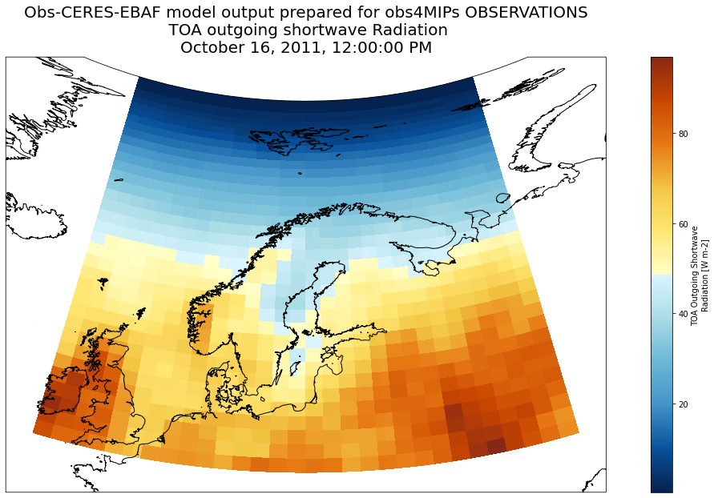

Using public data on NIRD using s3 and saving results in private s3 object storage
Contents
Using public data on NIRD using s3 and saving results in private s3 object storage#
How to discover (spatial and temporal search and subsetting) Obs-CERES-EBAF model output prepared for obs4MIPs OBSERVATIONS dataset
- We show how to access s3 anonymous data in netCDF, make a geographical area selection and store into zarr on s3 private object storage
- We do not address dask (chunking optimization, etc.)
import s3fs
import xarray as xr
Connect to bucket (anonymous login for public data only)#
fs = s3fs.S3FileSystem(anon=True,
client_kwargs={
'endpoint_url': 'https://climate.uiogeo-apps.sigma2.no/'
})
List bucket content#
fs.ls('ESGF')
['ESGF/#README#',
'ESGF/ALL_FILES_AND_DIRS_BELOW_HERE_SHALL_HAVE_GID_ns9252k_AND_WRITE_PERMS',
'ESGF/CMIP6',
'ESGF/cmip5',
'ESGF/files_with_permission_problem_8Sept2021.txt',
'ESGF/ns9252k_esgf_md5_betzy_sorted.txt',
'ESGF/ns9252k_esgf_md5_sorted.txt',
'ESGF/obs4MIPs',
'ESGF/simass_SImon_EC-Earth3-CC_piControl_r1i1p1f1_gn_187201-187212.nc']
fs.ls('ESGF/obs4MIPs/CERES-EBAF/')
['ESGF/obs4MIPs/CERES-EBAF/rlut_CERES-EBAF_L3B_Ed2-8_200003-201404.nc',
'ESGF/obs4MIPs/CERES-EBAF/rsut_CERES-EBAF_L3B_Ed2-8_200003-201404.nc']
Access data files#
if netCDF format is used, data access can be slow)
you should try to use cloud zarr format
s3path = 's3://ESGF/obs4MIPs/CERES-EBAF/*.nc'
remote_files = fs.glob(s3path)
remote_files
['ESGF/obs4MIPs/CERES-EBAF/rlut_CERES-EBAF_L3B_Ed2-8_200003-201404.nc',
'ESGF/obs4MIPs/CERES-EBAF/rsut_CERES-EBAF_L3B_Ed2-8_200003-201404.nc']
# Iterate through remote_files to create a fileset
fileset = [fs.open(file) for file in remote_files]
# This works
dset = xr.open_mfdataset(fileset, combine='by_coords')
dset
<xarray.Dataset>
Dimensions: (bnds: 2, lat: 180, lon: 360, time: 170)
Coordinates:
* time (time) datetime64[ns] 2000-03-16T12:00:00 ... 2014-04-16
* lat (lat) float64 -89.5 -88.5 -87.5 -86.5 ... 86.5 87.5 88.5 89.5
* lon (lon) float64 0.5 1.5 2.5 3.5 4.5 ... 356.5 357.5 358.5 359.5
Dimensions without coordinates: bnds
Data variables:
time_bnds (time, bnds) datetime64[ns] dask.array<chunksize=(170, 2), meta=np.ndarray>
lat_bnds (lat, bnds) float64 dask.array<chunksize=(180, 2), meta=np.ndarray>
lon_bnds (lon, bnds) float64 dask.array<chunksize=(360, 2), meta=np.ndarray>
rlut (time, lat, lon) float32 dask.array<chunksize=(170, 180, 360), meta=np.ndarray>
rsut (time, lat, lon) float32 dask.array<chunksize=(170, 180, 360), meta=np.ndarray>
Attributes: (12/27)
institution: NASA Langley Research Center, Hampton, Va, USA
institute_id: NASA-LaRC
experiment_id: obs
source: CERES retrievals
model_id: Obs-CERES-EBAF
contact: Norman Loeb, norman.g.loeb@nasa.gov
... ...
Conventions: CF-1.4
project_id: obs4MIPs
table_id: Table Amon_obs (10 March 2011) c2e3700dd6af44ea84f7a...
title: Obs-CERES-EBAF model output prepared for obs4MIPs OB...
modeling_realm: atmos
cmor_version: 2.8.3xarray.Dataset
- bnds: 2
- lat: 180
- lon: 360
- time: 170
- time(time)datetime64[ns]2000-03-16T12:00:00 ... 2014-04-16
- bounds :
- time_bnds
- axis :
- T
- long_name :
- time
- standard_name :
- time
array(['2000-03-16T12:00:00.000000000', '2000-04-16T00:00:00.000000000', '2000-05-16T12:00:00.000000000', '2000-06-16T00:00:00.000000000', '2000-07-16T12:00:00.000000000', '2000-08-16T12:00:00.000000000', '2000-09-16T00:00:00.000000000', '2000-10-16T12:00:00.000000000', '2000-11-16T00:00:00.000000000', '2000-12-16T12:00:00.000000000', '2001-01-16T12:00:00.000000000', '2001-02-15T00:00:00.000000000', '2001-03-16T12:00:00.000000000', '2001-04-16T00:00:00.000000000', '2001-05-16T12:00:00.000000000', '2001-06-16T00:00:00.000000000', '2001-07-16T12:00:00.000000000', '2001-08-16T12:00:00.000000000', '2001-09-16T00:00:00.000000000', '2001-10-16T12:00:00.000000000', '2001-11-16T00:00:00.000000000', '2001-12-16T12:00:00.000000000', '2002-01-16T12:00:00.000000000', '2002-02-15T00:00:00.000000000', '2002-03-16T12:00:00.000000000', '2002-04-16T00:00:00.000000000', '2002-05-16T12:00:00.000000000', '2002-06-16T00:00:00.000000000', '2002-07-16T12:00:00.000000000', '2002-08-16T12:00:00.000000000', '2002-09-16T00:00:00.000000000', '2002-10-16T12:00:00.000000000', '2002-11-16T00:00:00.000000000', '2002-12-16T12:00:00.000000000', '2003-01-16T12:00:00.000000000', '2003-02-15T00:00:00.000000000', '2003-03-16T12:00:00.000000000', '2003-04-16T00:00:00.000000000', '2003-05-16T12:00:00.000000000', '2003-06-16T00:00:00.000000000', '2003-07-16T12:00:00.000000000', '2003-08-16T12:00:00.000000000', '2003-09-16T00:00:00.000000000', '2003-10-16T12:00:00.000000000', '2003-11-16T00:00:00.000000000', '2003-12-16T12:00:00.000000000', '2004-01-16T12:00:00.000000000', '2004-02-15T12:00:00.000000000', '2004-03-16T12:00:00.000000000', '2004-04-16T00:00:00.000000000', '2004-05-16T12:00:00.000000000', '2004-06-16T00:00:00.000000000', '2004-07-16T12:00:00.000000000', '2004-08-16T12:00:00.000000000', '2004-09-16T00:00:00.000000000', '2004-10-16T12:00:00.000000000', '2004-11-16T00:00:00.000000000', '2004-12-16T12:00:00.000000000', '2005-01-16T12:00:00.000000000', '2005-02-15T00:00:00.000000000', '2005-03-16T12:00:00.000000000', '2005-04-16T00:00:00.000000000', '2005-05-16T12:00:00.000000000', '2005-06-16T00:00:00.000000000', '2005-07-16T12:00:00.000000000', '2005-08-16T12:00:00.000000000', '2005-09-16T00:00:00.000000000', '2005-10-16T12:00:00.000000000', '2005-11-16T00:00:00.000000000', '2005-12-16T12:00:00.000000000', '2006-01-16T12:00:00.000000000', '2006-02-15T00:00:00.000000000', '2006-03-16T12:00:00.000000000', '2006-04-16T00:00:00.000000000', '2006-05-16T12:00:00.000000000', '2006-06-16T00:00:00.000000000', '2006-07-16T12:00:00.000000000', '2006-08-16T12:00:00.000000000', '2006-09-16T00:00:00.000000000', '2006-10-16T12:00:00.000000000', '2006-11-16T00:00:00.000000000', '2006-12-16T12:00:00.000000000', '2007-01-16T12:00:00.000000000', '2007-02-15T00:00:00.000000000', '2007-03-16T12:00:00.000000000', '2007-04-16T00:00:00.000000000', '2007-05-16T12:00:00.000000000', '2007-06-16T00:00:00.000000000', '2007-07-16T12:00:00.000000000', '2007-08-16T12:00:00.000000000', '2007-09-16T00:00:00.000000000', '2007-10-16T12:00:00.000000000', '2007-11-16T00:00:00.000000000', '2007-12-16T12:00:00.000000000', '2008-01-16T12:00:00.000000000', '2008-02-15T12:00:00.000000000', '2008-03-16T12:00:00.000000000', '2008-04-16T00:00:00.000000000', '2008-05-16T12:00:00.000000000', '2008-06-16T00:00:00.000000000', '2008-07-16T12:00:00.000000000', '2008-08-16T12:00:00.000000000', '2008-09-16T00:00:00.000000000', '2008-10-16T12:00:00.000000000', '2008-11-16T00:00:00.000000000', '2008-12-16T12:00:00.000000000', '2009-01-16T12:00:00.000000000', '2009-02-15T00:00:00.000000000', '2009-03-16T12:00:00.000000000', '2009-04-16T00:00:00.000000000', '2009-05-16T12:00:00.000000000', '2009-06-16T00:00:00.000000000', '2009-07-16T12:00:00.000000000', '2009-08-16T12:00:00.000000000', '2009-09-16T00:00:00.000000000', '2009-10-16T12:00:00.000000000', '2009-11-16T00:00:00.000000000', '2009-12-16T12:00:00.000000000', '2010-01-16T12:00:00.000000000', '2010-02-15T00:00:00.000000000', '2010-03-16T12:00:00.000000000', '2010-04-16T00:00:00.000000000', '2010-05-16T12:00:00.000000000', '2010-06-16T00:00:00.000000000', '2010-07-16T12:00:00.000000000', '2010-08-16T12:00:00.000000000', '2010-09-16T00:00:00.000000000', '2010-10-16T12:00:00.000000000', '2010-11-16T00:00:00.000000000', '2010-12-16T12:00:00.000000000', '2011-01-16T12:00:00.000000000', '2011-02-15T00:00:00.000000000', '2011-03-16T12:00:00.000000000', '2011-04-16T00:00:00.000000000', '2011-05-16T12:00:00.000000000', '2011-06-16T00:00:00.000000000', '2011-07-16T12:00:00.000000000', '2011-08-16T12:00:00.000000000', '2011-09-16T00:00:00.000000000', '2011-10-16T12:00:00.000000000', '2011-11-16T00:00:00.000000000', '2011-12-16T12:00:00.000000000', '2012-01-16T12:00:00.000000000', '2012-02-15T12:00:00.000000000', '2012-03-16T12:00:00.000000000', '2012-04-16T00:00:00.000000000', '2012-05-16T12:00:00.000000000', '2012-06-16T00:00:00.000000000', '2012-07-16T12:00:00.000000000', '2012-08-16T12:00:00.000000000', '2012-09-16T00:00:00.000000000', '2012-10-16T12:00:00.000000000', '2012-11-16T00:00:00.000000000', '2012-12-16T12:00:00.000000000', '2013-01-16T12:00:00.000000000', '2013-02-15T00:00:00.000000000', '2013-03-16T12:00:00.000000000', '2013-04-16T00:00:00.000000000', '2013-05-16T12:00:00.000000000', '2013-06-16T00:00:00.000000000', '2013-07-16T12:00:00.000000000', '2013-08-16T12:00:00.000000000', '2013-09-16T00:00:00.000000000', '2013-10-16T12:00:00.000000000', '2013-11-16T00:00:00.000000000', '2013-12-16T12:00:00.000000000', '2014-01-16T12:00:00.000000000', '2014-02-15T00:00:00.000000000', '2014-03-16T12:00:00.000000000', '2014-04-16T00:00:00.000000000'], dtype='datetime64[ns]') - lat(lat)float64-89.5 -88.5 -87.5 ... 88.5 89.5
- bounds :
- lat_bnds
- units :
- degrees_north
- axis :
- Y
- long_name :
- latitude
- standard_name :
- latitude
array([-89.5, -88.5, -87.5, -86.5, -85.5, -84.5, -83.5, -82.5, -81.5, -80.5, -79.5, -78.5, -77.5, -76.5, -75.5, -74.5, -73.5, -72.5, -71.5, -70.5, -69.5, -68.5, -67.5, -66.5, -65.5, -64.5, -63.5, -62.5, -61.5, -60.5, -59.5, -58.5, -57.5, -56.5, -55.5, -54.5, -53.5, -52.5, -51.5, -50.5, -49.5, -48.5, -47.5, -46.5, -45.5, -44.5, -43.5, -42.5, -41.5, -40.5, -39.5, -38.5, -37.5, -36.5, -35.5, -34.5, -33.5, -32.5, -31.5, -30.5, -29.5, -28.5, -27.5, -26.5, -25.5, -24.5, -23.5, -22.5, -21.5, -20.5, -19.5, -18.5, -17.5, -16.5, -15.5, -14.5, -13.5, -12.5, -11.5, -10.5, -9.5, -8.5, -7.5, -6.5, -5.5, -4.5, -3.5, -2.5, -1.5, -0.5, 0.5, 1.5, 2.5, 3.5, 4.5, 5.5, 6.5, 7.5, 8.5, 9.5, 10.5, 11.5, 12.5, 13.5, 14.5, 15.5, 16.5, 17.5, 18.5, 19.5, 20.5, 21.5, 22.5, 23.5, 24.5, 25.5, 26.5, 27.5, 28.5, 29.5, 30.5, 31.5, 32.5, 33.5, 34.5, 35.5, 36.5, 37.5, 38.5, 39.5, 40.5, 41.5, 42.5, 43.5, 44.5, 45.5, 46.5, 47.5, 48.5, 49.5, 50.5, 51.5, 52.5, 53.5, 54.5, 55.5, 56.5, 57.5, 58.5, 59.5, 60.5, 61.5, 62.5, 63.5, 64.5, 65.5, 66.5, 67.5, 68.5, 69.5, 70.5, 71.5, 72.5, 73.5, 74.5, 75.5, 76.5, 77.5, 78.5, 79.5, 80.5, 81.5, 82.5, 83.5, 84.5, 85.5, 86.5, 87.5, 88.5, 89.5]) - lon(lon)float640.5 1.5 2.5 ... 357.5 358.5 359.5
- bounds :
- lon_bnds
- units :
- degrees_east
- axis :
- X
- long_name :
- longitude
- standard_name :
- longitude
array([ 0.5, 1.5, 2.5, ..., 357.5, 358.5, 359.5])
- time_bnds(time, bnds)datetime64[ns]dask.array<chunksize=(170, 2), meta=np.ndarray>
Array Chunk Bytes 2.72 kB 2.72 kB Shape (170, 2) (170, 2) Count 5 Tasks 1 Chunks Type datetime64[ns] numpy.ndarray - lat_bnds(lat, bnds)float64dask.array<chunksize=(180, 2), meta=np.ndarray>
Array Chunk Bytes 2.88 kB 2.88 kB Shape (180, 2) (180, 2) Count 5 Tasks 1 Chunks Type float64 numpy.ndarray - lon_bnds(lon, bnds)float64dask.array<chunksize=(360, 2), meta=np.ndarray>
Array Chunk Bytes 5.76 kB 5.76 kB Shape (360, 2) (360, 2) Count 5 Tasks 1 Chunks Type float64 numpy.ndarray - rlut(time, lat, lon)float32dask.array<chunksize=(170, 180, 360), meta=np.ndarray>
- standard_name :
- toa_outgoing_longwave_flux
- long_name :
- TOA Outgoing Longwave Radiation
- comment :
- at the top of the atmosphere (to be compared with satellite measurements)
- units :
- W m-2
- original_name :
- toa_lw_all_mon
- history :
- variable history
- cell_methods :
- time: mean
- cell_measures :
- area: areacella
- associated_files :
- baseURL: http://cmip-pcmdi.llnl.gov/CMIP5/dataLocation gridspecFile: gridspec_atmos_fx_Obs-CERES-EBAF_obs_r0i0p0.nc areacella: areacella_fx_Obs-CERES-EBAF_obs_r0i0p0.nc
Array Chunk Bytes 44.06 MB 44.06 MB Shape (170, 180, 360) (170, 180, 360) Count 2 Tasks 1 Chunks Type float32 numpy.ndarray - rsut(time, lat, lon)float32dask.array<chunksize=(170, 180, 360), meta=np.ndarray>
- standard_name :
- toa_outgoing_shortwave_flux
- long_name :
- TOA Outgoing Shortwave Radiation
- comment :
- at the top of the atmosphere
- units :
- W m-2
- original_name :
- toa_sw_all_mon
- history :
- variable history
- cell_methods :
- time: mean
- cell_measures :
- area: areacella
- associated_files :
- baseURL: http://cmip-pcmdi.llnl.gov/CMIP5/dataLocation gridspecFile: gridspec_atmos_fx_Obs-CERES-EBAF_obs_r0i0p0.nc areacella: areacella_fx_Obs-CERES-EBAF_obs_r0i0p0.nc
Array Chunk Bytes 44.06 MB 44.06 MB Shape (170, 180, 360) (170, 180, 360) Count 2 Tasks 1 Chunks Type float32 numpy.ndarray
- institution :
- NASA Langley Research Center, Hampton, Va, USA
- institute_id :
- NASA-LaRC
- experiment_id :
- obs
- source :
- CERES retrievals
- model_id :
- Obs-CERES-EBAF
- contact :
- Norman Loeb, norman.g.loeb@nasa.gov
- references :
- http://ceres.larc.nasa.gov/cmip5_data.php
- tracking_id :
- 5da4db80-31cb-4340-b5e1-0fbacaee873a
- instrument :
- CERES
- processing_version :
- Ed2.8
- processing_level :
- L3B
- mip_specs :
- CMIP5
- data_structure :
- grid
- source_type :
- satellite_retrieval
- source_id :
- CERES-EBAF
- realm :
- atmos
- obs_project :
- EBAF
- product :
- observations
- frequency :
- mon
- creation_date :
- 2014-07-29T14:04:11Z
- history :
- Tue Jul 29 10:06:18 2014: /software/bin/ncatted -a realization,global,d,c, /data/cmitresc/obs4MIPs/observations/atmos/rlut/mon/grid/NASA-LaRC/CERES-EBAF/v20140728/rlut_CERES-EBAF_L3B_Ed2-8_200003-201404.nc Tue Jul 29 10:06:18 2014: /software/bin/ncatted -a experiment,global,d,c, /data/cmitresc/obs4MIPs/observations/atmos/rlut/mon/grid/NASA-LaRC/CERES-EBAF/v20140728/rlut_CERES-EBAF_L3B_Ed2-8_200003-201404.nc Tue Jul 29 10:06:17 2014: /software/bin/ncatted -a physics_version,global,d,c, /data/cmitresc/obs4MIPs/observations/atmos/rlut/mon/grid/NASA-LaRC/CERES-EBAF/v20140728/rlut_CERES-EBAF_L3B_Ed2-8_200003-201404.nc Tue Jul 29 10:06:17 2014: /software/bin/ncatted -a initialization_method,global,d,c, /data/cmitresc/obs4MIPs/observations/atmos/rlut/mon/grid/NASA-LaRC/CERES-EBAF/v20140728/rlut_CERES-EBAF_L3B_Ed2-8_200003-201404.nc 2014-07-29T14:04:11Z CMOR rewrote data to comply with CF standards and obs4MIPs requirements.
- Conventions :
- CF-1.4
- project_id :
- obs4MIPs
- table_id :
- Table Amon_obs (10 March 2011) c2e3700dd6af44ea84f7aba06c34ca30
- title :
- Obs-CERES-EBAF model output prepared for obs4MIPs OBSERVATIONS
- modeling_realm :
- atmos
- cmor_version :
- 2.8.3
Shift longitude from 0 to 360 to -180 to 180 for convenience (when subsetting)#
dset = dset.assign_coords(lon=(((dset.lon + 180) % 360) - 180)).sortby('lon')
Plot a single time#
!pip install cmaps
WARNING: The directory '/home/jovyan/.cache/pip' or its parent directory is not owned or is not writable by the current user. The cache has been disabled. Check the permissions and owner of that directory. If executing pip with sudo, you may want sudo's -H flag.
Requirement already satisfied: cmaps in /opt/conda/lib/python3.8/site-packages (1.0.3)
Requirement already satisfied: matplotlib in /opt/conda/lib/python3.8/site-packages (from cmaps) (3.3.4)
Requirement already satisfied: numpy in /opt/conda/lib/python3.8/site-packages (from cmaps) (1.20.1)
Requirement already satisfied: kiwisolver>=1.0.1 in /opt/conda/lib/python3.8/site-packages (from matplotlib->cmaps) (1.3.1)
Requirement already satisfied: pillow>=6.2.0 in /opt/conda/lib/python3.8/site-packages (from matplotlib->cmaps) (8.1.2)
Requirement already satisfied: python-dateutil>=2.1 in /opt/conda/lib/python3.8/site-packages (from matplotlib->cmaps) (2.7.5)
Requirement already satisfied: cycler>=0.10 in /opt/conda/lib/python3.8/site-packages (from matplotlib->cmaps) (0.10.0)
Requirement already satisfied: pyparsing!=2.0.4,!=2.1.2,!=2.1.6,>=2.0.3 in /opt/conda/lib/python3.8/site-packages (from matplotlib->cmaps) (2.4.7)
Requirement already satisfied: six in /opt/conda/lib/python3.8/site-packages (from cycler>=0.10->matplotlib->cmaps) (1.15.0)
import cartopy.crs as ccrs
import matplotlib.pyplot as plt
import cmaps
fig=plt.figure(figsize=(20,10))
# We're using cartopy and are plotting in Orthographic projection
# (see documentation on cartopy)
ax = plt.subplot(1, 1, 1, projection=ccrs.AlbersEqualArea(central_longitude=20.0, central_latitude=40.0))
ax.coastlines(resolution='10m')
# custom colormap
lcmap = cmaps.BlueYellowRed
# We need to project our data to the new Mercator projection and for this we use `transform`.
# we set the original data projection in transform (here PlateCarree)
# we only plot values greather than 0
dset['rlut'].sel(time='2011-10-16').sel(lat=slice(50,90), lon=slice(-10,50)).plot(ax=ax, transform=ccrs.PlateCarree(), cmap=lcmap)
ax.set_title('Obs-CERES-EBAF model output prepared for obs4MIPs OBSERVATIONS\n ', fontsize=20)
plt.savefig('Obs-CERES-EBAF_rlut_2011-10-16.png')
Save results in zarr on NIRD for further analysis#
your credentials are in
$HOME/.aws/credentialscheck with your instructor to get the secret access key (replace XXX by the right key)
[default]
aws_access_key_id=forces2021-work
aws_secret_access_key=XXXXXXXXXXXX
aws_endpoint_url=https://forces2021.uiogeo-apps.sigma2.no/
import fsspec
Set the path to your group’s location (ask your instructor)#
target = fsspec.get_mapper("s3://work/obs4MIPs_CERES-EBAFObs_rlut_rsut.zarr",
client_kwargs={
'endpoint_url': 'https://forces2021.uiogeo-apps.sigma2.no/'
}
)
dset.sel(lat=slice(50,90), lon=slice(-10,50)).to_zarr(store=target, mode="w", consolidated=True, compute=True)
<xarray.backends.zarr.ZarrStore at 0x7f4b1c96bd60>
Check what you have stored in s3#
we use https://forces2021.uiogeo-apps.sigma2.no/ as an endpoint
we need to authenticate to access data (anon=False)
Initilize the S3 file system#
fsg = s3fs.S3FileSystem(anon=False,
client_kwargs={
'endpoint_url': 'https://forces2021.uiogeo-apps.sigma2.no/'
})
fsg.ls('work')
['work/obs4MIPs_CERES-EBAFObs_rlut_rsut.zarr']
Set path to s3 data#
s3_path = 's3://work/obs4MIPs_CERES-EBAFObs_rlut_rsut.zarr'
Initialize the S3 filesystem#
store = s3fs.S3Map(root=s3_path, s3=fsg, check=False)
ds = xr.open_zarr(store=store, consolidated=True)
ds
<xarray.Dataset>
Dimensions: (bnds: 2, lat: 40, lon: 60, time: 170)
Coordinates:
* lat (lat) float64 50.5 51.5 52.5 53.5 54.5 ... 86.5 87.5 88.5 89.5
* lon (lon) float64 -9.5 -8.5 -7.5 -6.5 -5.5 ... 46.5 47.5 48.5 49.5
* time (time) datetime64[ns] 2000-03-16T12:00:00 ... 2014-04-16
Dimensions without coordinates: bnds
Data variables:
lat_bnds (lat, bnds) float64 dask.array<chunksize=(40, 2), meta=np.ndarray>
lon_bnds (lon, bnds) float64 dask.array<chunksize=(60, 2), meta=np.ndarray>
rlut (time, lat, lon) float32 dask.array<chunksize=(170, 40, 60), meta=np.ndarray>
rsut (time, lat, lon) float32 dask.array<chunksize=(170, 40, 60), meta=np.ndarray>
time_bnds (time, bnds) datetime64[ns] dask.array<chunksize=(170, 2), meta=np.ndarray>
Attributes: (12/27)
Conventions: CF-1.4
cmor_version: 2.8.3
contact: Norman Loeb, norman.g.loeb@nasa.gov
creation_date: 2014-07-29T14:04:11Z
data_structure: grid
experiment_id: obs
... ...
source: CERES retrievals
source_id: CERES-EBAF
source_type: satellite_retrieval
table_id: Table Amon_obs (10 March 2011) c2e3700dd6af44ea84f7a...
title: Obs-CERES-EBAF model output prepared for obs4MIPs OB...
tracking_id: 5da4db80-31cb-4340-b5e1-0fbacaee873axarray.Dataset
- bnds: 2
- lat: 40
- lon: 60
- time: 170
- lat(lat)float6450.5 51.5 52.5 ... 87.5 88.5 89.5
- axis :
- Y
- bounds :
- lat_bnds
- long_name :
- latitude
- standard_name :
- latitude
- units :
- degrees_north
array([50.5, 51.5, 52.5, 53.5, 54.5, 55.5, 56.5, 57.5, 58.5, 59.5, 60.5, 61.5, 62.5, 63.5, 64.5, 65.5, 66.5, 67.5, 68.5, 69.5, 70.5, 71.5, 72.5, 73.5, 74.5, 75.5, 76.5, 77.5, 78.5, 79.5, 80.5, 81.5, 82.5, 83.5, 84.5, 85.5, 86.5, 87.5, 88.5, 89.5]) - lon(lon)float64-9.5 -8.5 -7.5 ... 47.5 48.5 49.5
array([-9.5, -8.5, -7.5, -6.5, -5.5, -4.5, -3.5, -2.5, -1.5, -0.5, 0.5, 1.5, 2.5, 3.5, 4.5, 5.5, 6.5, 7.5, 8.5, 9.5, 10.5, 11.5, 12.5, 13.5, 14.5, 15.5, 16.5, 17.5, 18.5, 19.5, 20.5, 21.5, 22.5, 23.5, 24.5, 25.5, 26.5, 27.5, 28.5, 29.5, 30.5, 31.5, 32.5, 33.5, 34.5, 35.5, 36.5, 37.5, 38.5, 39.5, 40.5, 41.5, 42.5, 43.5, 44.5, 45.5, 46.5, 47.5, 48.5, 49.5]) - time(time)datetime64[ns]2000-03-16T12:00:00 ... 2014-04-16
- axis :
- T
- bounds :
- time_bnds
- long_name :
- time
- standard_name :
- time
array(['2000-03-16T12:00:00.000000000', '2000-04-16T00:00:00.000000000', '2000-05-16T12:00:00.000000000', '2000-06-16T00:00:00.000000000', '2000-07-16T12:00:00.000000000', '2000-08-16T12:00:00.000000000', '2000-09-16T00:00:00.000000000', '2000-10-16T12:00:00.000000000', '2000-11-16T00:00:00.000000000', '2000-12-16T12:00:00.000000000', '2001-01-16T12:00:00.000000000', '2001-02-15T00:00:00.000000000', '2001-03-16T12:00:00.000000000', '2001-04-16T00:00:00.000000000', '2001-05-16T12:00:00.000000000', '2001-06-16T00:00:00.000000000', '2001-07-16T12:00:00.000000000', '2001-08-16T12:00:00.000000000', '2001-09-16T00:00:00.000000000', '2001-10-16T12:00:00.000000000', '2001-11-16T00:00:00.000000000', '2001-12-16T12:00:00.000000000', '2002-01-16T12:00:00.000000000', '2002-02-15T00:00:00.000000000', '2002-03-16T12:00:00.000000000', '2002-04-16T00:00:00.000000000', '2002-05-16T12:00:00.000000000', '2002-06-16T00:00:00.000000000', '2002-07-16T12:00:00.000000000', '2002-08-16T12:00:00.000000000', '2002-09-16T00:00:00.000000000', '2002-10-16T12:00:00.000000000', '2002-11-16T00:00:00.000000000', '2002-12-16T12:00:00.000000000', '2003-01-16T12:00:00.000000000', '2003-02-15T00:00:00.000000000', '2003-03-16T12:00:00.000000000', '2003-04-16T00:00:00.000000000', '2003-05-16T12:00:00.000000000', '2003-06-16T00:00:00.000000000', '2003-07-16T12:00:00.000000000', '2003-08-16T12:00:00.000000000', '2003-09-16T00:00:00.000000000', '2003-10-16T12:00:00.000000000', '2003-11-16T00:00:00.000000000', '2003-12-16T12:00:00.000000000', '2004-01-16T12:00:00.000000000', '2004-02-15T12:00:00.000000000', '2004-03-16T12:00:00.000000000', '2004-04-16T00:00:00.000000000', '2004-05-16T12:00:00.000000000', '2004-06-16T00:00:00.000000000', '2004-07-16T12:00:00.000000000', '2004-08-16T12:00:00.000000000', '2004-09-16T00:00:00.000000000', '2004-10-16T12:00:00.000000000', '2004-11-16T00:00:00.000000000', '2004-12-16T12:00:00.000000000', '2005-01-16T12:00:00.000000000', '2005-02-15T00:00:00.000000000', '2005-03-16T12:00:00.000000000', '2005-04-16T00:00:00.000000000', '2005-05-16T12:00:00.000000000', '2005-06-16T00:00:00.000000000', '2005-07-16T12:00:00.000000000', '2005-08-16T12:00:00.000000000', '2005-09-16T00:00:00.000000000', '2005-10-16T12:00:00.000000000', '2005-11-16T00:00:00.000000000', '2005-12-16T12:00:00.000000000', '2006-01-16T12:00:00.000000000', '2006-02-15T00:00:00.000000000', '2006-03-16T12:00:00.000000000', '2006-04-16T00:00:00.000000000', '2006-05-16T12:00:00.000000000', '2006-06-16T00:00:00.000000000', '2006-07-16T12:00:00.000000000', '2006-08-16T12:00:00.000000000', '2006-09-16T00:00:00.000000000', '2006-10-16T12:00:00.000000000', '2006-11-16T00:00:00.000000000', '2006-12-16T12:00:00.000000000', '2007-01-16T12:00:00.000000000', '2007-02-15T00:00:00.000000000', '2007-03-16T12:00:00.000000000', '2007-04-16T00:00:00.000000000', '2007-05-16T12:00:00.000000000', '2007-06-16T00:00:00.000000000', '2007-07-16T12:00:00.000000000', '2007-08-16T12:00:00.000000000', '2007-09-16T00:00:00.000000000', '2007-10-16T12:00:00.000000000', '2007-11-16T00:00:00.000000000', '2007-12-16T12:00:00.000000000', '2008-01-16T12:00:00.000000000', '2008-02-15T12:00:00.000000000', '2008-03-16T12:00:00.000000000', '2008-04-16T00:00:00.000000000', '2008-05-16T12:00:00.000000000', '2008-06-16T00:00:00.000000000', '2008-07-16T12:00:00.000000000', '2008-08-16T12:00:00.000000000', '2008-09-16T00:00:00.000000000', '2008-10-16T12:00:00.000000000', '2008-11-16T00:00:00.000000000', '2008-12-16T12:00:00.000000000', '2009-01-16T12:00:00.000000000', '2009-02-15T00:00:00.000000000', '2009-03-16T12:00:00.000000000', '2009-04-16T00:00:00.000000000', '2009-05-16T12:00:00.000000000', '2009-06-16T00:00:00.000000000', '2009-07-16T12:00:00.000000000', '2009-08-16T12:00:00.000000000', '2009-09-16T00:00:00.000000000', '2009-10-16T12:00:00.000000000', '2009-11-16T00:00:00.000000000', '2009-12-16T12:00:00.000000000', '2010-01-16T12:00:00.000000000', '2010-02-15T00:00:00.000000000', '2010-03-16T12:00:00.000000000', '2010-04-16T00:00:00.000000000', '2010-05-16T12:00:00.000000000', '2010-06-16T00:00:00.000000000', '2010-07-16T12:00:00.000000000', '2010-08-16T12:00:00.000000000', '2010-09-16T00:00:00.000000000', '2010-10-16T12:00:00.000000000', '2010-11-16T00:00:00.000000000', '2010-12-16T12:00:00.000000000', '2011-01-16T12:00:00.000000000', '2011-02-15T00:00:00.000000000', '2011-03-16T12:00:00.000000000', '2011-04-16T00:00:00.000000000', '2011-05-16T12:00:00.000000000', '2011-06-16T00:00:00.000000000', '2011-07-16T12:00:00.000000000', '2011-08-16T12:00:00.000000000', '2011-09-16T00:00:00.000000000', '2011-10-16T12:00:00.000000000', '2011-11-16T00:00:00.000000000', '2011-12-16T12:00:00.000000000', '2012-01-16T12:00:00.000000000', '2012-02-15T12:00:00.000000000', '2012-03-16T12:00:00.000000000', '2012-04-16T00:00:00.000000000', '2012-05-16T12:00:00.000000000', '2012-06-16T00:00:00.000000000', '2012-07-16T12:00:00.000000000', '2012-08-16T12:00:00.000000000', '2012-09-16T00:00:00.000000000', '2012-10-16T12:00:00.000000000', '2012-11-16T00:00:00.000000000', '2012-12-16T12:00:00.000000000', '2013-01-16T12:00:00.000000000', '2013-02-15T00:00:00.000000000', '2013-03-16T12:00:00.000000000', '2013-04-16T00:00:00.000000000', '2013-05-16T12:00:00.000000000', '2013-06-16T00:00:00.000000000', '2013-07-16T12:00:00.000000000', '2013-08-16T12:00:00.000000000', '2013-09-16T00:00:00.000000000', '2013-10-16T12:00:00.000000000', '2013-11-16T00:00:00.000000000', '2013-12-16T12:00:00.000000000', '2014-01-16T12:00:00.000000000', '2014-02-15T00:00:00.000000000', '2014-03-16T12:00:00.000000000', '2014-04-16T00:00:00.000000000'], dtype='datetime64[ns]')
- lat_bnds(lat, bnds)float64dask.array<chunksize=(40, 2), meta=np.ndarray>
Array Chunk Bytes 640 B 640 B Shape (40, 2) (40, 2) Count 2 Tasks 1 Chunks Type float64 numpy.ndarray - lon_bnds(lon, bnds)float64dask.array<chunksize=(60, 2), meta=np.ndarray>
Array Chunk Bytes 960 B 960 B Shape (60, 2) (60, 2) Count 2 Tasks 1 Chunks Type float64 numpy.ndarray - rlut(time, lat, lon)float32dask.array<chunksize=(170, 40, 60), meta=np.ndarray>
- associated_files :
- baseURL: http://cmip-pcmdi.llnl.gov/CMIP5/dataLocation gridspecFile: gridspec_atmos_fx_Obs-CERES-EBAF_obs_r0i0p0.nc areacella: areacella_fx_Obs-CERES-EBAF_obs_r0i0p0.nc
- cell_measures :
- area: areacella
- cell_methods :
- time: mean
- comment :
- at the top of the atmosphere (to be compared with satellite measurements)
- history :
- variable history
- long_name :
- TOA Outgoing Longwave Radiation
- original_name :
- toa_lw_all_mon
- standard_name :
- toa_outgoing_longwave_flux
- units :
- W m-2
Array Chunk Bytes 1.63 MB 1.63 MB Shape (170, 40, 60) (170, 40, 60) Count 2 Tasks 1 Chunks Type float32 numpy.ndarray - rsut(time, lat, lon)float32dask.array<chunksize=(170, 40, 60), meta=np.ndarray>
- associated_files :
- baseURL: http://cmip-pcmdi.llnl.gov/CMIP5/dataLocation gridspecFile: gridspec_atmos_fx_Obs-CERES-EBAF_obs_r0i0p0.nc areacella: areacella_fx_Obs-CERES-EBAF_obs_r0i0p0.nc
- cell_measures :
- area: areacella
- cell_methods :
- time: mean
- comment :
- at the top of the atmosphere
- history :
- variable history
- long_name :
- TOA Outgoing Shortwave Radiation
- original_name :
- toa_sw_all_mon
- standard_name :
- toa_outgoing_shortwave_flux
- units :
- W m-2
Array Chunk Bytes 1.63 MB 1.63 MB Shape (170, 40, 60) (170, 40, 60) Count 2 Tasks 1 Chunks Type float32 numpy.ndarray - time_bnds(time, bnds)datetime64[ns]dask.array<chunksize=(170, 2), meta=np.ndarray>
Array Chunk Bytes 2.72 kB 2.72 kB Shape (170, 2) (170, 2) Count 2 Tasks 1 Chunks Type datetime64[ns] numpy.ndarray
- Conventions :
- CF-1.4
- cmor_version :
- 2.8.3
- contact :
- Norman Loeb, norman.g.loeb@nasa.gov
- creation_date :
- 2014-07-29T14:04:11Z
- data_structure :
- grid
- experiment_id :
- obs
- frequency :
- mon
- history :
- Tue Jul 29 10:06:18 2014: /software/bin/ncatted -a realization,global,d,c, /data/cmitresc/obs4MIPs/observations/atmos/rlut/mon/grid/NASA-LaRC/CERES-EBAF/v20140728/rlut_CERES-EBAF_L3B_Ed2-8_200003-201404.nc Tue Jul 29 10:06:18 2014: /software/bin/ncatted -a experiment,global,d,c, /data/cmitresc/obs4MIPs/observations/atmos/rlut/mon/grid/NASA-LaRC/CERES-EBAF/v20140728/rlut_CERES-EBAF_L3B_Ed2-8_200003-201404.nc Tue Jul 29 10:06:17 2014: /software/bin/ncatted -a physics_version,global,d,c, /data/cmitresc/obs4MIPs/observations/atmos/rlut/mon/grid/NASA-LaRC/CERES-EBAF/v20140728/rlut_CERES-EBAF_L3B_Ed2-8_200003-201404.nc Tue Jul 29 10:06:17 2014: /software/bin/ncatted -a initialization_method,global,d,c, /data/cmitresc/obs4MIPs/observations/atmos/rlut/mon/grid/NASA-LaRC/CERES-EBAF/v20140728/rlut_CERES-EBAF_L3B_Ed2-8_200003-201404.nc 2014-07-29T14:04:11Z CMOR rewrote data to comply with CF standards and obs4MIPs requirements.
- institute_id :
- NASA-LaRC
- institution :
- NASA Langley Research Center, Hampton, Va, USA
- instrument :
- CERES
- mip_specs :
- CMIP5
- model_id :
- Obs-CERES-EBAF
- modeling_realm :
- atmos
- obs_project :
- EBAF
- processing_level :
- L3B
- processing_version :
- Ed2.8
- product :
- observations
- project_id :
- obs4MIPs
- realm :
- atmos
- references :
- http://ceres.larc.nasa.gov/cmip5_data.php
- source :
- CERES retrievals
- source_id :
- CERES-EBAF
- source_type :
- satellite_retrieval
- table_id :
- Table Amon_obs (10 March 2011) c2e3700dd6af44ea84f7aba06c34ca30
- title :
- Obs-CERES-EBAF model output prepared for obs4MIPs OBSERVATIONS
- tracking_id :
- 5da4db80-31cb-4340-b5e1-0fbacaee873a
Plot TOA outgoing shortwave Radiation#
Note that there is no need to select an area because the s3 dataset only cover the area of interest (selected when saving dataset in s3 storage)
fig=plt.figure(figsize=(20,10))
# We're using cartopy and are plotting in Orthographic projection
# (see documentation on cartopy)
ax = plt.subplot(1, 1, 1, projection=ccrs.AlbersEqualArea(central_longitude=20.0, central_latitude=40.0))
ax.coastlines(resolution='10m')
# custom colormap
lcmap = cmaps.BlueYellowRed
# We need to project our data to the new Mercator projection and for this we use `transform`.
# we set the original data projection in transform (here PlateCarree)
# we only plot values greather than 0
ds['rsut'].sel(time='2011-10-16').plot(ax=ax, transform=ccrs.PlateCarree(), cmap=lcmap)
ax.set_title('Obs-CERES-EBAF model output prepared for obs4MIPs OBSERVATIONS\n TOA outgoing shortwave Radiation\n' + str(ds.time.sel(time='2011-10-16').dt.strftime("%B %d, %Y, %r").values[0]), fontsize=20)
plt.savefig('Obs-CERES-EBAF_rsut_2011-10-16.png')
